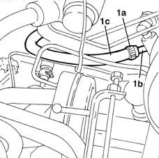
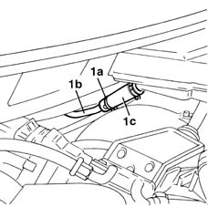

1280B43 RIGID PIPE from clutch reservoir to (pump) - master cylinder R.R. for right hand drive versions
- Path
- Procedures > 18 CLUTCH > 1820 CLUTCH RELEASE CONTROLS > 1820B HYDRAULIC CLUTCH SYSTEM > 1280B43 RIGID PIPE from clutch reservoir to (pump) - master cylinder R.R. for right hand drive versions
- Kind
- repair procedure (removal / refitting; the operation number is the code)
- Applies to
- all engines; all production periods
- Interactive page
- https://sloeber94.github.io/elrnDB-fMltpl/en/#/2891535
Applies to: engines: 1.9 JTD 8V; all production periods; only with equipment: Right hand drive
 Removing
Removing
 Refitting
RefittingApplies to: all engines; all production periods; only with equipment: Right hand drive
Disconnect the battery negative terminal.
Position a container underneath the vehicle.
Drain the brake/clutch fluid reservoir using a syringe.
1. Open the pump side band (1a) and disconnect the rigid pipe (1b) from the flexible one (1c).

Applies to: all engines; all production periods; only with equipment: Right hand drive
1. Remove the reservoir side band (1a) and disconnect the rigid pipe (1b) from the flexible one (1c).
Release the rigid pipe from the fastenings and remove it.

Applies to: all engines; all production periods; only with equipment: Right hand drive
Refitting
RemovingFit the rigid pipe securing it to the fastenings.
Connect the rigid pipe to the flexible one closing the reservoir side band.
Connect the rigid pipe to the flexible one closing the pump side band.
1820B08 Clutch release HYDRAULIC SYSTEM - Bleeding air and restoring level
Applies to: engines: 1.9 JTD 8V; all production periods; only with equipment: Right hand drive
Applies to: all engines; all production periods; only with equipment: Right hand drive
Connect the battery negative terminal.